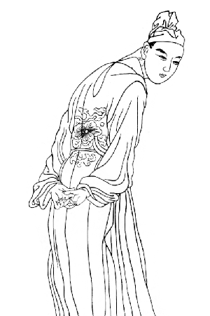

李商隐（813年—约858年），字义山，号玉谿生、樊南生，怀州河内县（今河南省沁阳市）人，祖籍陇西狄道（今甘肃省临洮县），晚唐诗人，和杜牧合称“小李杜”，与温庭筠合称为“温李”，与同时期的段成式、温庭筠风格相近，且都在家族里排行十六，故并称为三十六体。在《唐诗三百首》中，李商隐的诗作占廿二首，数量位列第四。
李商隐通常被视作唐代后期最杰出的诗人，其诗风受李贺影响颇深，在句法、章法和结构方面则受到杜甫和韩愈的影响。王安石云：“唐人知学老杜而得其藩篱者，惟义山一人而已。”李调元《雨村诗话》认为：“学杜而处处规，此笨伯也，终身不得升其堂，况入其室。唐人升堂，惟李义山一人而已。”叶绍蕴《石林诗话》云：“唐人学老杜，为商隐一人而已；虽未尽造其妙，然精密华丽，亦自得仿佛。”有部分评论家认为，在唐朝的优秀诗人中，他的重要性仅次于杜甫、李白、王维等人。就诗歌风格的独特性而言，他与其他任何诗人相比都不逊色。赞赏李商隐诗歌和批评他的人，所针对的都是他鲜明的个人风格。
相见时难别亦难，东风无力百花残。
春蚕到死丝方尽，蜡炬成灰泪始干。
晓镜但愁云鬓改，夜吟应觉月光寒。
蓬山此去无多路，青鸟殷勤为探看。
锦瑟无端五十弦，一弦一柱思华年。
庄生晓梦迷蝴蝶，望帝春心托杜鹃。
沧海月明珠有泪，蓝田日暖玉生烟。
此情可待成追忆，只是当时已惘然。
君问归期未有期，巴山夜雨涨秋池。
何当共剪西窗烛，却话巴山夜雨时。